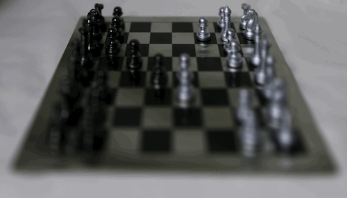
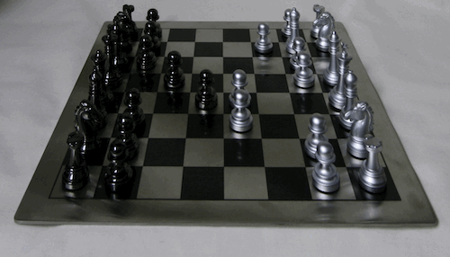
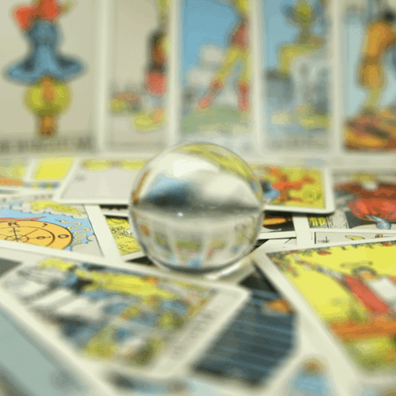
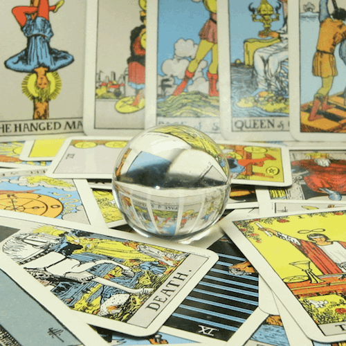

In his paper written back in 2005 at Stanford, Ren Ng (founder of the Lytro) and his colleagues wanted to see if depth of field and aperture could be adjusted in post process, which normally would be almost impossible to do. Specifically this could allow for refocusing blurry images as well as allow all subject in a image to be perfectly visible. They did by capturing multiple images using a 17 by 17 array of camera over a plane orthogonal to the optical axis (the center camera). The goal of this project is to take the data they provided in the Stanford Light Field Archive and demonstrate the computations necessary to achieve the aforementioned effects using simple algorithms.
Objects farther away in an image do not appear to change much when a person varies their position as opposed to foreground object (which move quite a bit when we do). This principle is one of the main reasons why it's easy for us to determine if an object is father away from us when we move. If we average all the images in the dataset together we end up with an image with sharp far away objects and blurry nearby ones. To get around this, and to sharpen foreground objects we simply center the image around a center image, and then we shift the images that surround it (which range from [-8, 8] given a 17 by 17 array) by the amount we would like to adjust the depth focus by. In this is I used a range of [-3, 1] with step values of 1. This took around 5 minutes make the images.
Here is how one of the images looks:
By averaging a large number of images surrounding the optical axis (on a grid), we can deliminate ranges that correspond to aperture sizes. This is because in a camera the aperture get bigger and allows more light in which is very similar to allowing a larger range of image ranges to contribute to our average image. Similarly a smaller aperture would correspond to decreasing the amount of light in an image, and thus mean to decrease the range of images contributing to our average.
Let's see how this looks in practice:
|

Largest Aperture |

Aperture Range |
|

Largest Aperture |

Aperture Range |